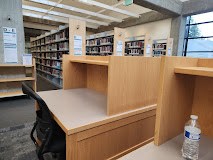

Quiet study spaces are designed for students who need an environment with minimal conversation and distraction.
Look for spaces with comfortable seating, reliable Wi-Fi, and access to power outlets.